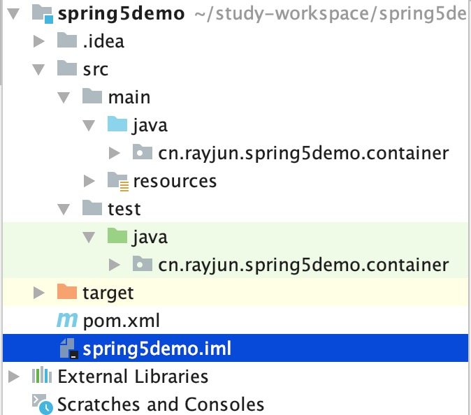

Spring系列之如何优雅的构建Demo环境
在最开始学习 Java 的时候，最常用的方式就是写一个 main 方法，然后在这个方法中不断写代码，然后跑起来。通常这样也不会有问题，但是这难免有点不优雅，毕竟一个类只能有一个 main 方法。
如何优雅的写 Demo
特别是要系统学习一些框架的时候，通常需要写大量的示例代码。使用 main 方法时，很多代码写过一遍后就得删除或者注释掉，回头想重新看这个例子的时候就得重新写。
总的来是，直接在 main 中写 Demo 代码有如下的问题：
- 一个类只能有一个 main 方法
- 一次只能执行一个 main 方法
- 每次改变 demo 逻辑都需要修改现有代码
其实 Java 中已经提供了一个很好的工具来解决这个问题，没错，就是 JUnit。使用 JUnit 来写 Demo 代码有如下的好处：
- JUnint 配置简单，添加一个 jar 包，不需要添加额外配置
- 一个类中可以写任意多个测试用例，每个测试用例可以单独运行或者组合运行
- 每个测试用例都可以重新运行
这样就可以很好的管理写过的 Demo，在必要的时候，都可以拿出来复习。更重要的是可以通过这种方式来培养写单元测试的意识，毕竟，写软件终究要回归到精雕细琢，那么单元测试就是一大利器。
本文基于 JUnit5，Spring5，Maven3.6
使用 JUnit 写 Spring Demo
下面来看一下如何使用 JUnit 快速的搭建一个 Spring 的 Demo 环境。
我们使用 Maven 作为构建工具，创建一个 maven 的普通项目后，需要引入相关的依赖。
在这里我只引入了 Spring5 的核心依赖，如果有需要，可以自行引入其他的依赖
引入依赖
1
2
3
4
5
6
7
8
9
10
11
12
13
14
15
16
17
18
19
20
21
22
23
24
25
26
27
28
29
30
31
32
33
34<properties>
<spring.version>5.2.2.RELEASE</spring.version>
<junit5.version>5.1.0-M2</junit5.version>
</properties>
<dependencies>
<dependency>
<groupId>org.springframework</groupId>
<artifactId>spring-core</artifactId>
<version>${spring.version}</version>
</dependency>
<dependency>
<groupId>org.springframework</groupId>
<artifactId>spring-beans</artifactId>
<version>${spring.version}</version>
</dependency>
<dependency>
<groupId>org.springframework</groupId>
<artifactId>spring-context</artifactId>
<version>${spring.version}</version>
</dependency>
<dependency>
<groupId>org.springframework</groupId>
<artifactId>spring-test</artifactId>
<version>${spring.version}</version>
</dependency>
<dependency>
<groupId>org.junit.jupiter</groupId>
<artifactId>junit-jupiter-engine</artifactId>
<version>${junit5.version}</version>
<scope>test</scope>
</dependency>
</dependencies>
除了引入 spring-test 之外，还需要引入 JUnit，因为 spring-test 依赖 Junit。
然后项目的基本结构如图：

在 test 目录下创建一个包，和源码码包名保持一致，然后就可以开始写测试代码了。
启动 Spring 容器
启动 Spring 项目的关键在于启动 Spring 容器，在单元测试从也一样，这里分别演示一下 XML 版本和 Java 配置版本。
XML版：
首先在 resources 目录下创建一个 beans.xml 配置文件（文件名称可以随便起）：
1
2
3
4
5
6
7
8
9
10
<beans xmlns="http://www.springframework.org/schema/beans"
xmlns:xsi="http://www.w3.org/2001/XMLSchema-instance"
xmlns:context="http://www.springframework.org/schema/context"
xsi:schemaLocation="http://www.springframework.org/schema/beans
https://www.springframework.org/schema/beans/spring-beans.xsd
http://www.springframework.org/schema/context https://www.springframework.org/schema/context/spring-context.xsd">
<context:component-scan base-package="cn.rayjun.spring5demo" />
</beans>
加了 component-scan 来扫描基本的包，该包下的 bean 会被 Spring 容器自动加载并初始化。
容器的配置创建好了，然后就需要在测试类中用如下的方式加载了：
1
2
3
4(locations = "classpath:beans.xml")
public class SpringTest1 {
}@SpringJUnitConfig 注解是 Spring 增强过了的，加上这个注解之后，就可以在单元测试中很方便的使用 Spring 的特性。
@ContextConfiguration 用来加载 Spring 容器的配置文件，除了可以加载 XML，还可以加载 Java 配置。
这样就完成容器的初始化了。
Java 版
创建一个 Java 类来充当配置文件，位置放在哪里都行：
1
2
3
4
(basePackages = "cn.rayjun.spring5demo")
public class SoldierConfig {
}
@Configuration 表明这个类是一个配置类。@ComponentScan 与 XML 配置中的 component-scan 作用一样。
然后同样在测试用例中启动容器：
1
2
3
4(classes = SoldierConfig.class)
public class SpringTest2 {
}
编写第一个测试用例
容器相关的配置已经准备好了，接下来来编写第一条测试用例：
1
2
3
4
5
6
7
8
9
10
11
12(locations = "classpath:beans.xml")
public class SpringTest1 {
private Gun gun;
public void test1() {
Assertions.assertNotNull(gun);
}
}
通过上面的代码我们发现，可以直接通过注入的方式来注入相关的依赖。比如 Gun 类，只要在配置中声明好，然后就可以在测试用用例使用。甚至可以通过这种方式获取到容器本身：
1
2
3
4
5
6
7
8
9
10
11
12
13(locations = "classpath:beans.xml")
public class SpringTest1 {
private ApplicationContext context;
public void test2() {
Gun gun = (Gun) context.getBean("gun");
Assertions.assertNotNull(gun);
}
}
高阶用法
除了这些之外，有时候还会有一些复杂的情况，比如涉及到 Web，数据库方面测试。
spring-test 提供了 Web 测试的一样方法，来模拟接口或者 web 页面的访问。然后对于其他的一些异常情况的模拟，比如网速慢，真实环境难以搭建等等问题，就需要使用 Mock 的方式来模拟这些情况，就需要 再引入一些其他的依赖，这些回头再用新的文章来说明。